Sur iPhone, le PDF s'ouvre dans un nouvel onglet. Touche le bouton Partager puis « Enregistrer dans Fichiers ». Sur Mac, fais Fichier puis Enregistrer.
Les notions clés
Fais défiler les cartes vers la gauche.
A. L'essor, d'un émirat à une puissance mondiale (vers 1300-1566)
1. D'un émirat à un empire (vers 1300-1453)
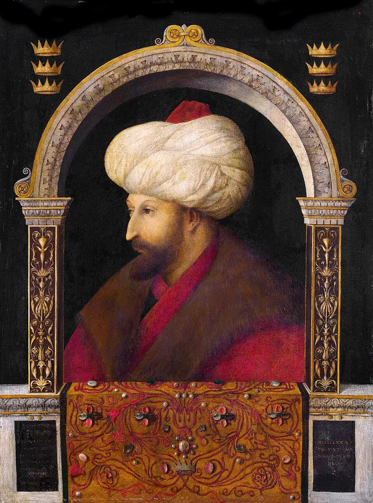
Vers 1300, Osman donne son nom à la dynastie. Bursa devient capitale en 1326 et les Ottomans passent en Europe à Gallipoli en 1354. Les Balkans tombent, avec Kosovo (1389) et la conquête de la Bulgarie (Sofia vers 1382, Tarnovo 1393, Vidin 1396).
Le 29 mai 1453, après 53 jours de siège, Mehmed II, 21 ans, prend Constantinople. Il a un canon géant et fait passer ses navires par voie de terre pour contourner la chaîne du port. Fatih, le Conquérant, fait de Sainte-Sophie une mosquée et d'Istanbul sa capitale. L'empire tient désormais les détroits entre mer Noire et Méditerranée.
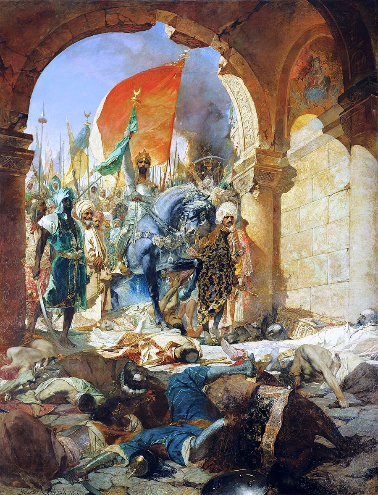
Un regard orientaliste du XIXe siècle, peint plus de quatre siècles après 1453. Ce n'est pas un document de l'époque, c'est une vision européenne fantasmée.
2. L'apogée, de Sélim Ier à Soliman (1512-1566)
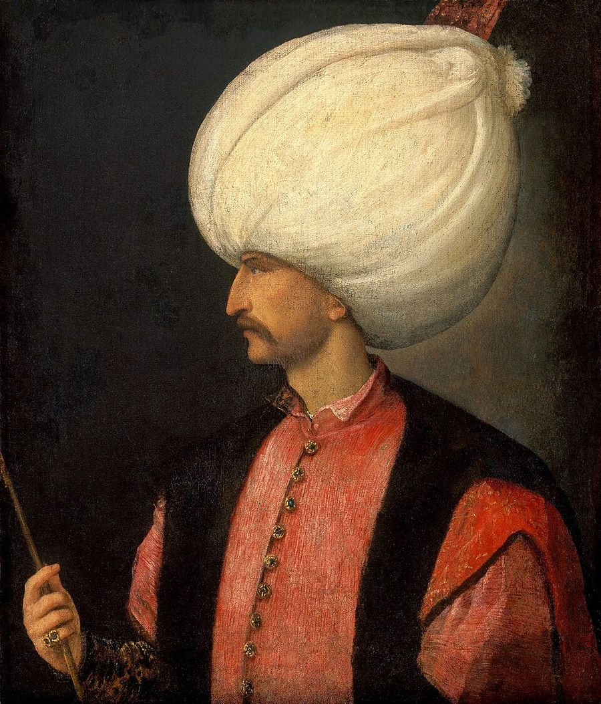
Sélim Ier bat les Perses à Tchaldiran (1514) et conquiert l'Égypte (1517). Protecteur de La Mecque et de Médine, le sultan devient calife, chef du monde sunnite.
Soliman (1520-1566), le Magnifique pour les Européens, Kanuni, le Législateur, pour ses sujets, gagne à Mohács (1526) et assiège Vienne (1529), sans succès. Son amiral Barberousse domine la Méditerranée. En 1536, François Ier, « roi très chrétien », s'allie au sultan contre les Habsbourg. Ces accords, les capitulations, donnent aussi des privilèges commerciaux aux Français.
3. Les ressorts de la puissance ottomane
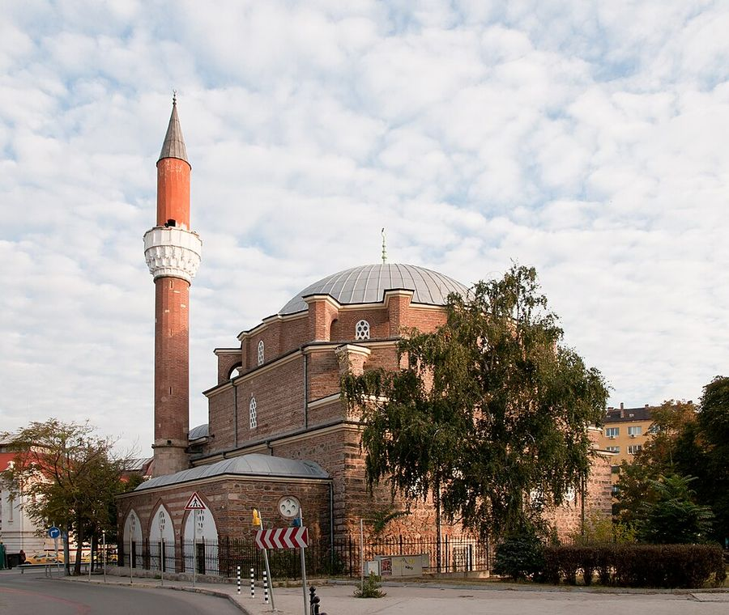
Zoom sur Sofia. Les terres bulgares font partie de la Roumélie, la partie européenne de l'empire, dont le gouverneur réside longtemps à Sofia. La terre est répartie en timars, le devchirmé prélève des garçons dans les villages, une partie de la population se convertit, comme les Pomaks des Rhodopes. L'Église orthodoxe garde son culte, et le monastère de Rila conserve la langue et la mémoire bulgares.
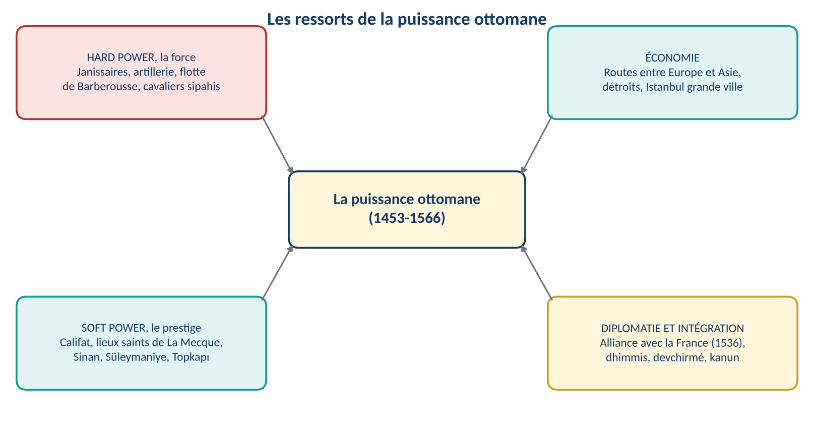
B. Le déclin, du recul à la disparition (1571-1923)
1. Une puissance contestée puis en recul (1571-1839)
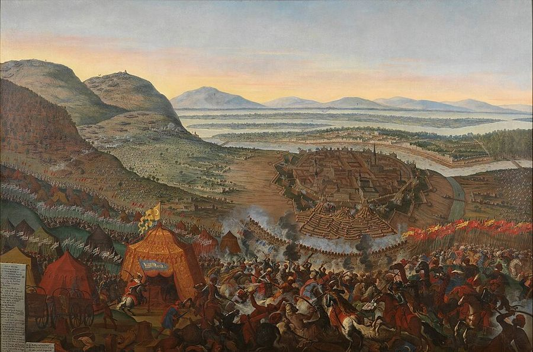
À Lépante (1571), la flotte ottomane est détruite, mais reconstruite en un hiver. Le vrai tournant date du 12 septembre 1683. Devant Vienne, le grand vizir Kara Mustafa est mis en déroute par Jean III Sobieski. Au traité de Karlowitz (1699), l'empire cède la Hongrie. La Russie devient l'adversaire principal et gagne la mer Noire en 1774.
Les causes sont militaires (armées européennes plus modernes, janissaires hostiles aux réformes), économiques (le commerce passe par l'Atlantique, les capitulations profitent aux Européens) et politiques (pouvoir central affaibli). On parle de déclin relatif.
2. « L'homme malade de l'Europe » (1839-1914)
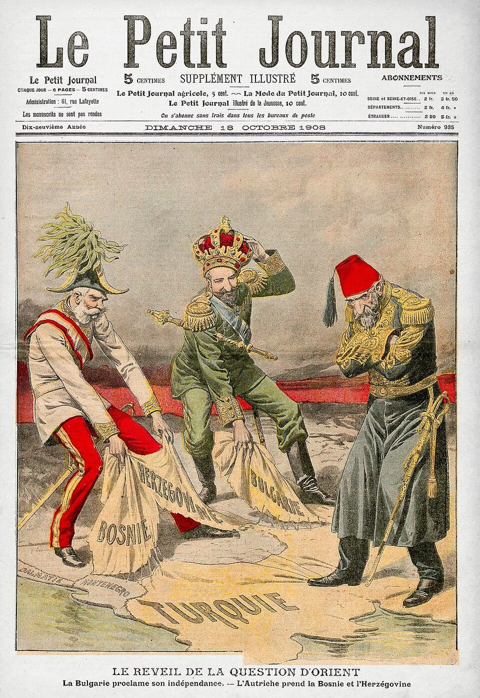
En 1853, le tsar Nicolas Ier parle de « l'homme malade de l'Europe ». C'est la question d'Orient. La Russie veut la Méditerranée, le Royaume-Uni protège la route des Indes, l'Autriche-Hongrie vise les Balkans.
L'empire se réforme avec les Tanzimat (1839) et une Constitution (1876), suspendue par Abdülhamid II en 1878. Mais les pertes s'enchaînent. La Grèce devient indépendante (1830), la France prend l'Algérie (1830) et la Tunisie (1881), le Royaume-Uni l'Égypte (1882). En faillite (1875), l'État laisse des créanciers européens lever ses impôts (1881). En 1908, les Jeunes-Turcs prennent le pouvoir.
La tulipe arrive en Europe depuis l'Empire ottoman. En revanche, le croissant viennois qui fêterait la victoire de 1683 est une légende.
3. Dossier. La Bulgarie, de la Renaissance à l'indépendance
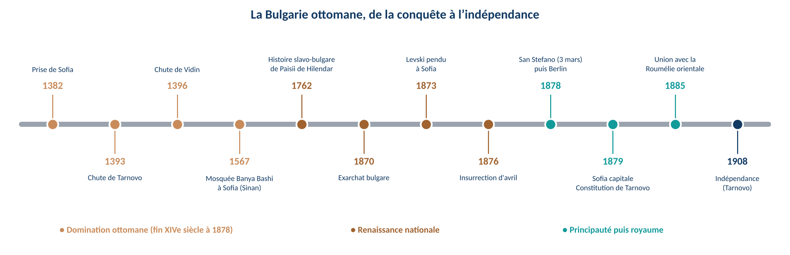
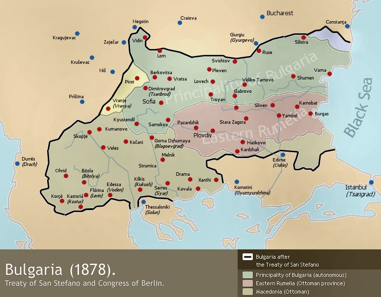
La Renaissance nationale commence avec Paisii de Hilendar (« Histoire slavo-bulgare », 1762). Les écoles bulgares se multiplient et un firman du sultan crée l'Exarchat bulgare (1870), Église indépendante du patriarcat grec. Vasil Levski et Hristo Botev préparent la lutte. L'insurrection d'avril 1876 est écrasée (massacre de Batak), l'Europe s'indigne et Victor Hugo dénonce les massacres.
La Russie attaque en 1877 (Chipka, Plevna). Le traité de San Stefano (3 mars 1878, fête nationale) crée une grande Bulgarie, que le Congrès de Berlin (juillet 1878) réduit à une principauté autonome pour limiter l'influence russe. Union avec la Roumélie orientale en 1885, indépendance en 1908.
4. La chute et la naissance de la Turquie (1914-1923)
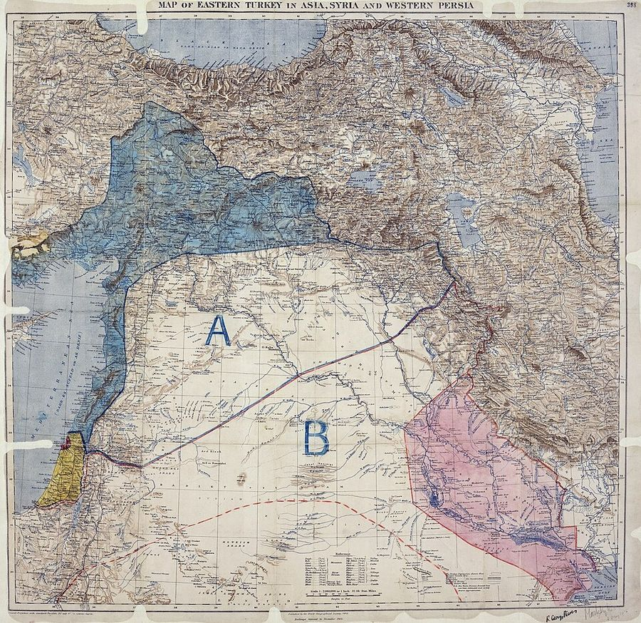
Allié de l'Allemagne en 1914, l'empire repousse les Alliés aux Dardanelles (1915), où s'illustre Mustafa Kemal. La même année, les Jeunes-Turcs organisent le génocide des Arméniens, plus d'un million de victimes. Les accords Sykes-Picot (1916) prévoient le partage du Moyen-Orient entre France et Royaume-Uni.
Vaincu, l'empire est dépecé au traité de Sèvres (1920). Kemal le refuse et gagne la guerre d'indépendance. Le traité de Lausanne (24 juillet 1923) fixe les frontières de la Turquie, République le 29 octobre 1923. Le califat disparaît en 1924.
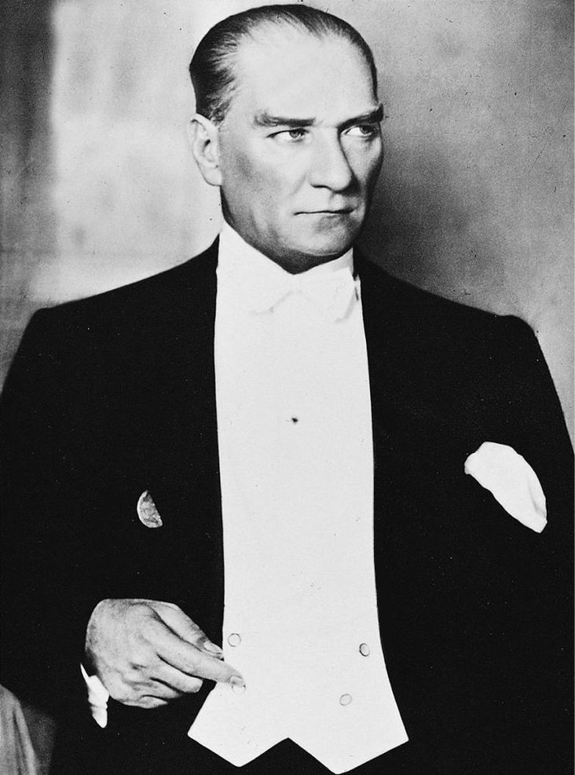
Le héros des Dardanelles fonde la République turque en 1923, abolit le califat (1924) et laïcise le pays. Il reçoit en 1934 le nom d'Atatürk, le père des Turcs.
C. Repères et vocabulaire
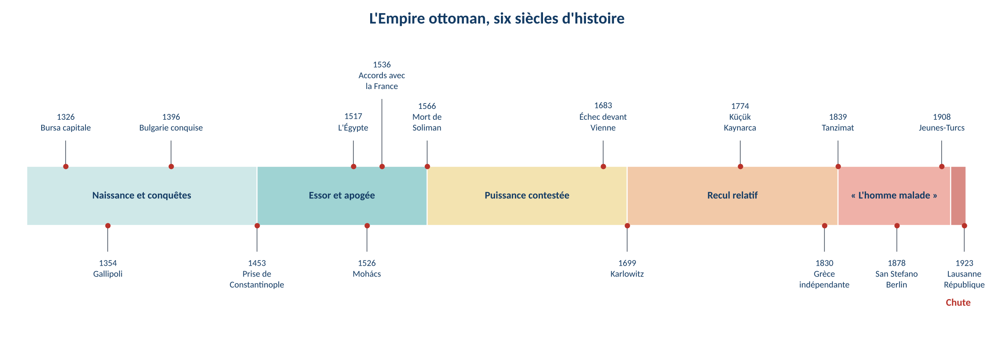
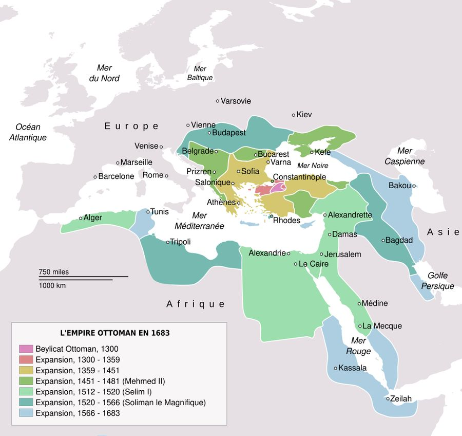
Calife chef des croyants. Capitulations privilèges des étrangers. Devchirmé prélèvement de garçons chrétiens. Dhimmi non-musulman protégé qui paie un impôt. Divan conseil du sultan. Exarchat Église orthodoxe autonome. Grand vizir premier ministre. Janissaires infanterie d'élite. Roumélie partie européenne de l'empire. Sublime Porte gouvernement ottoman. Tanzimat réformes de 1839.
Méthode. L'introduction en sept briques
Introduction modèle. « L'essor de l'Empire ottoman, une puissance fondée sur la seule force ? »
[Accroche] Le 24 juillet 2020, pour la première prière dans Sainte-Sophie redevenue mosquée, l'imam prêche une épée à la main, en souvenir de 1453.
[Définitions] L'essor désigne une croissance rapide et durable de la puissance, que Raymond Aron définit comme la capacité d'imposer sa volonté aux autres. Joseph Nye distingue le hard power, la contrainte, du soft power, l'attraction.
[Bornes et contexte] De 1453, quand l'empire devient l'héritier de Byzance, à 1566, mort de Soliman, les Ottomans dominent la Méditerranée orientale pendant que l'Europe se tourne vers l'Atlantique.
[Paradoxe] Un émirat né de tribus d'Anatolie gouverne des Balkans chrétiens et s'allie au « roi très chrétien ». Sa puissance ne repose donc pas seulement sur le sabre.
[Problématique] Dans quelle mesure l'essor ottoman repose-t-il autant sur l'habileté politique que sur la force des armes ?
[Plan] Nous verrons d'abord une redoutable machine de conquête, puis une puissance qui dure parce qu'elle sait intégrer, se légitimer et négocier.
Le paragraphe argumenté suit trois temps. L'idée (« la puissance ottomane s'appuie aussi sur la diplomatie »), l'exemple daté (« en 1536, Soliman s'allie à François Ier contre les Habsbourg »), l'analyse (« un roi chrétien choisit un sultan musulman, l'empire est un acteur majeur du jeu européen »).
Les pièges. Raconter l'histoire au lieu d'argumenter, recopier le sujet en guise de problématique, annoncer « dans une première partie » au lieu d'idées, oublier de justifier les bornes.
D. À toi de jouer
1. Teste-toi
Réponds dans ta tête ou sur ton cahier, puis vérifie.
1. Qui définit la puissance comme la capacité d'imposer sa volonté ?
Raymond Aron.
2. Quand et par qui Constantinople est-elle prise ?
Le 29 mai 1453, par Mehmed II.
3. Quel est le surnom de Soliman chez ses sujets ?
Kanuni, le Législateur.
4. Pourquoi l'alliance de 1536 surprend-elle ?
Un roi « très chrétien » s'allie au sultan musulman contre les Habsbourg.
5. Qu'est-ce que le devchirmé ?
Le prélèvement de garçons chrétiens, convertis et formés pour l'armée et l'État.
6. Quel traité fait perdre la Hongrie, et quand ?
Karlowitz, 1699.
7. Qui parle de « l'homme malade de l'Europe » ?
Le tsar Nicolas Ier, en 1853.
8. Pourquoi le 3 mars est-il la fête nationale bulgare ?
Le traité de San Stefano (3 mars 1878) crée une Bulgarie autonome.
9. Pourquoi le Congrès de Berlin réduit-il la Bulgarie ?
Pour limiter l'influence russe dans les Balkans.
10. Quel traité fixe les frontières de la Turquie ?
Lausanne, 24 juillet 1923.
2. Ottoman, pas ottoman ou légende ? 0/7
3. La frise. Touche les événements dans l'ordre chronologique
4. Atelier introduction
Ton texte reste enregistré sur ce téléphone. Recopie-le dans ton cahier ou envoie-le dans le bilan du jeu.
1. Réponds à la problématique en cinq lignes, avec tes mots.
2. Fais deux colonnes, hard power et soft power, avec trois exemples datés chacune.
3. Raconte en cinq lignes l'indépendance bulgare, de 1762 à 1908.
4. Apprends les repères et le vocabulaire.
Pensez bien à imprimer vos cours ou à rédiger une synthèse sur votre cahier.